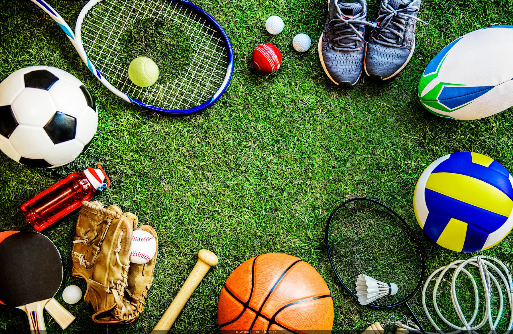

Sport
Sportul este esențial pentru un stil de viață sănătos. Practicarea sportului dezvoltă disciplina, spiritul de echipă și contribuie la o stare bună de sănătate fizică și mentală.Un sport reprezintă o activitate de natură fizică ce poate implica și competiții. Totodată, sportul este o activitate care influențează stilul de viață, sănătatea sau personalitatea unui om. Sporturile se pot categorisi în individuale (de exemplu atletism, haltere, tir sportiv) sau de echipă (de exemplu baschet, canotaj).
 Înapoi la pagina principală